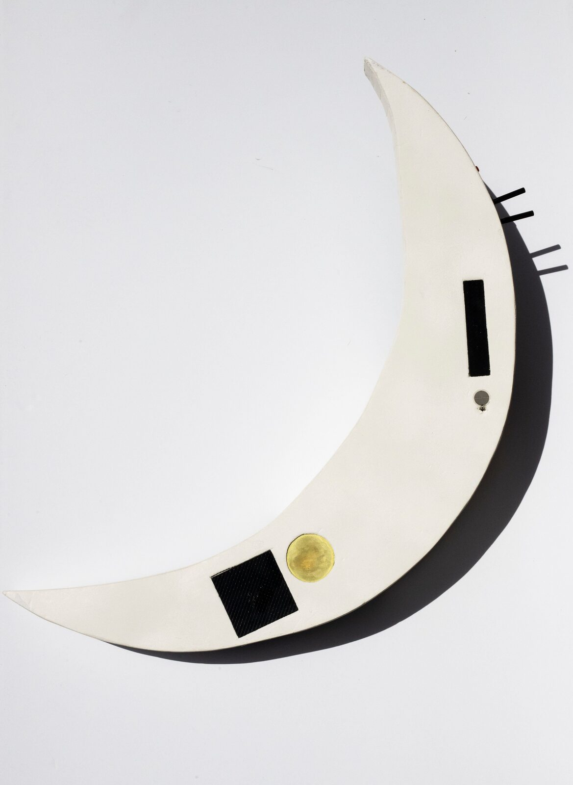
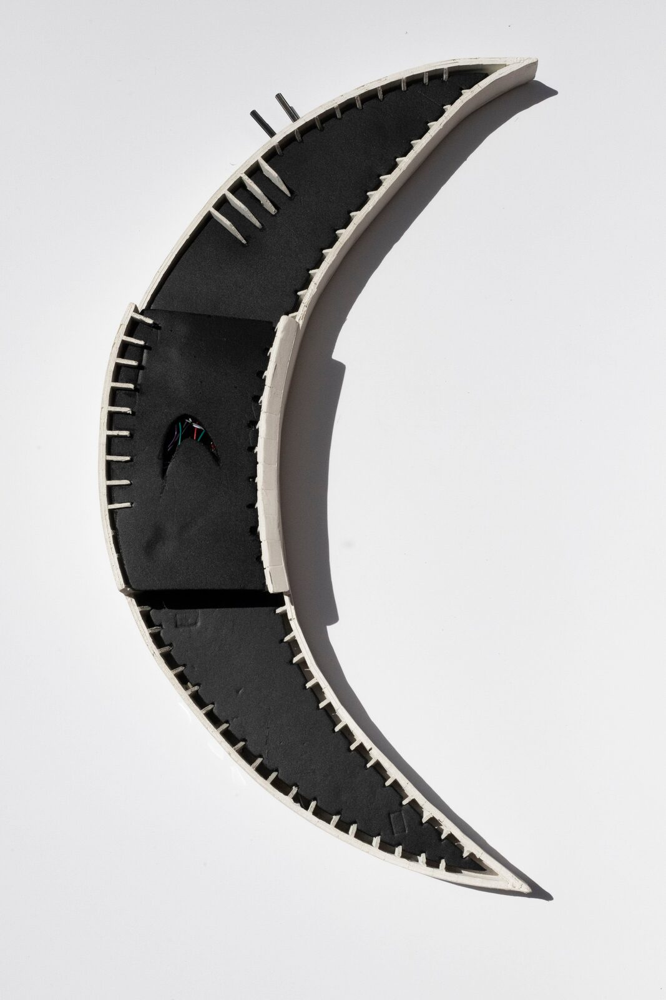
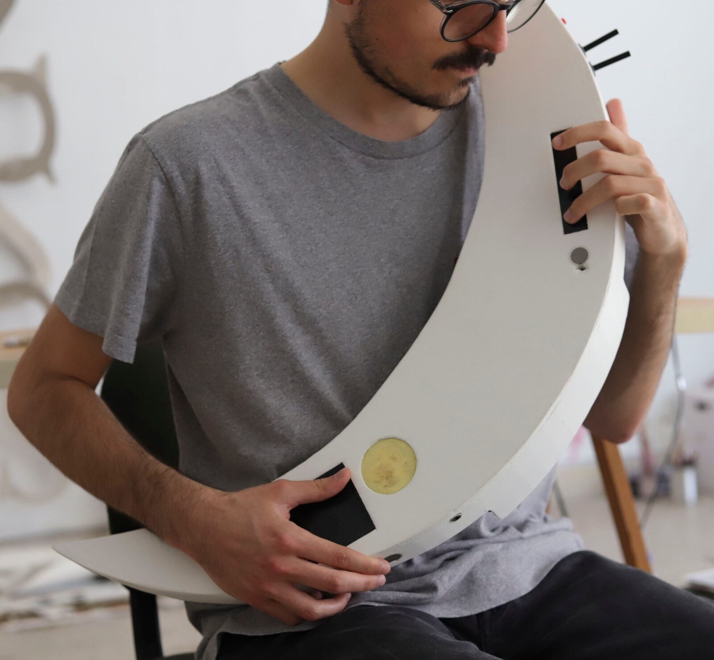

Crescente: a new musical instrument for live performance
Crescente: a new musical instrument for live performance
PubPub Link
https://nime.pubpub.org/pub/b3fkwcg7/draft?access=kkbz0rfb
Abstract
This demo presents the current version of Crescente: a portable, standalone and moon-shaped new instrument for musical expression. Its development, based on the platform Bela, was guided by the desire to achieve a sense of expressiveness in the context of live electroacoustic music performance. To do so, we based our research on developing an appropriate mapping strategy linking physical gestures to sound. Some of the features implemented to engage with this aim are the use of feedback loops, delay lines, the mix of electronic, digital, and electroacoustic elements, the mapping between sensors, sound synthesis, and actuators, as well as the body of the instrument and how it relates to the human body. Crescente’s main features are presented on this demo, as well as a short performance to showcase the sounds produced and the physical gestures made when playing this instrument.
Requirements
To showcase this demo, we will need to do an oral presentation (e.g. Zoom) and we will need to be able to share some videos with audio.
Program Description
The demo will be presented by both authors. Firstly, the research questions and musical aims which led to the prototyping of Crescente will be introduced in a brief manner. After this presentation, the authors are going to show a video which depicts Crescente’s features, regarding its design, sensors and mappings. After this video, the authors will briefly explain some of the design choices and will also address future work on improving the prototype. Afterwards, the authors will play a second video which portrays some clips of the first author performing with the current version of Crescente. To finish this demo, the authors would like to open a short discussion with the attendees, in order to gather feedback on the work presented. In addition, the authors will have Crescente next to them, ready to do demonstrations in real time according the wishes of the participants.
Media


Crescente’s front face.


Crescente’s back view.


Main posture and holding position being used for playing Crescente.
Acknowledgements
The authors would like to thank the following instituitions: Faculdade de Engenharia da Universidade do Porto (FEUP), Escola Superior de Media Artes e Design (ESMAD) and CIPEM-INET/md. We’d also like to thank Gilberto Bernardes, Francisca Dores and Filipe Tootil.